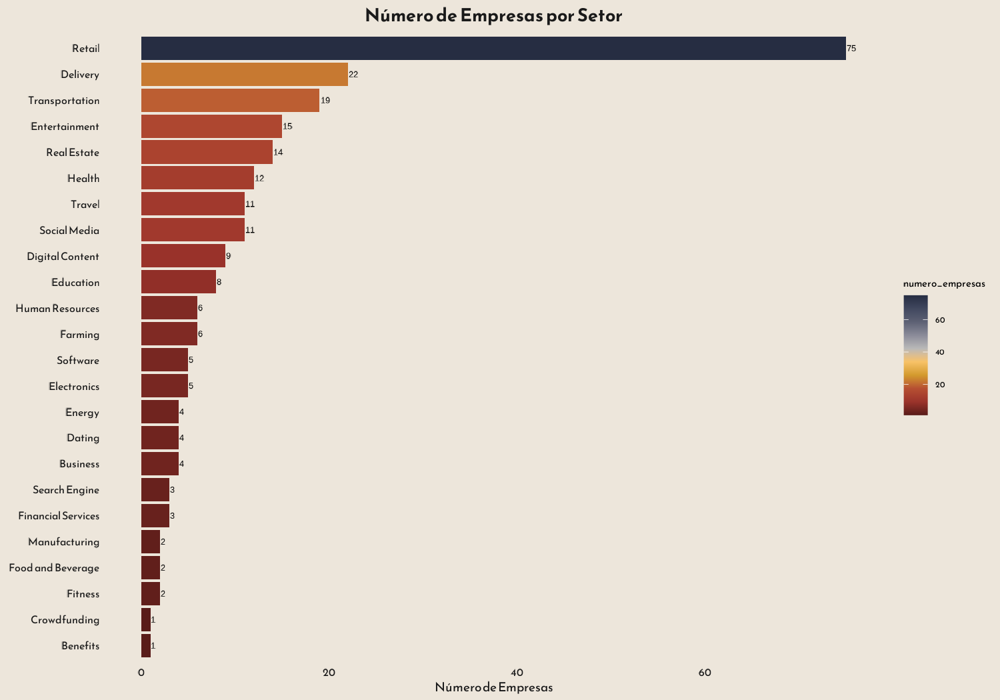
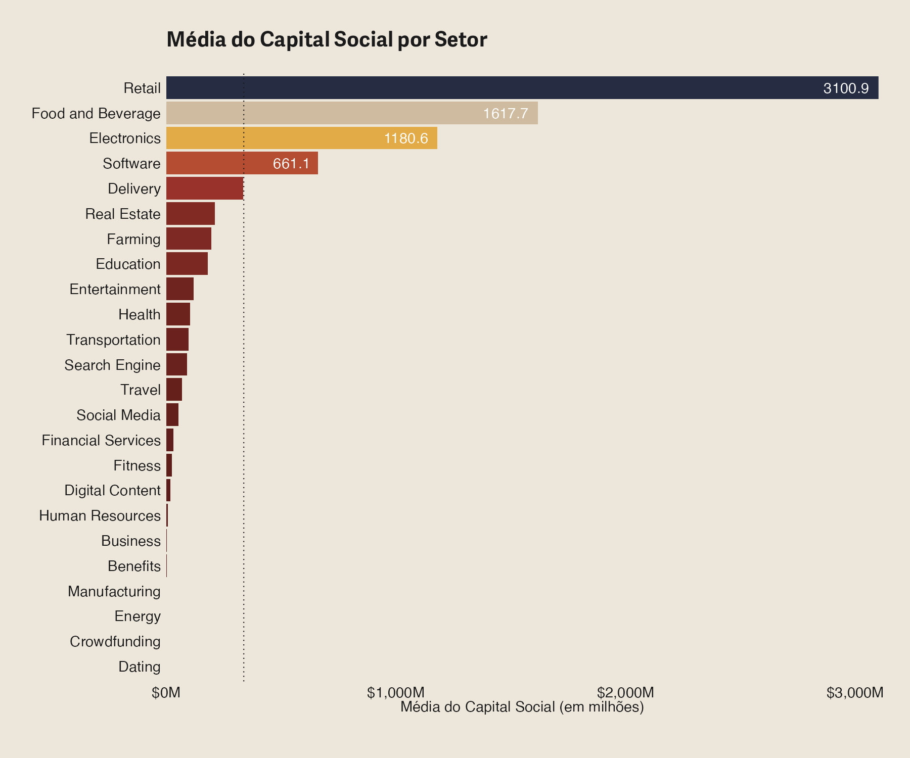

Empresas de Plataforma no Brasil: Setores, Escala e Capital
Uma visão setorial da presença de empresas de plataforma no Brasil a partir da quantidade de firmas e do capital social médio
plataformas digitais
economia digital
Brasil
Published
August 6, 2025
Panorama das plataformas digitais no Brasil
As empresas de plataforma — como aplicativos de transporte, delivery, e-commerce, fintechs e redes sociais — têm ganhado importância crescente na economia brasileira. Com base em dados empresariais, analisamos dois aspectos:
A distribuição do número de empresas por setor
A média do capital social por setor
Essa abordagem permite entender quais setores concentram mais firmas e quais operam com maiores volumes de capital, sinalizando dinâmicas distintas de entrada, escala e financiamento.
Número de empresas por setor
O gráfico abaixo apresenta a quantidade de empresas de plataforma registradas em cada setor. O destaque absoluto é o setor de Retail (varejo digital), com 75 empresas, seguido pelos setores de Delivery, Transportation e Entretenimento.

Essa distribuição indica que setores com baixa barreira de entrada e forte presença digital atraem maior número de empresas, ainda que com variações no grau de consolidação e presença regional.
Capital social médio por setor
O capital social é um bom proxy da escala inicial das empresas. O gráfico a seguir mostra a média do capital social (em milhões de reais) das empresas de plataforma por setor:

O setor de Retail também lidera em capital médio (R$ 3,1 milhões), seguido por Food and Beverage e Electronics, com destaque para os setores de base logística e tecnológica.
Setores como Software, Delivery e Real Estate apresentam capital médio mais elevado que a média.
Já áreas como Dating, Crowdfunding e Energy apresentam capital reduzido, indicando presença de empresas menores ou startups em estágio inicial.
Este post integra a série sobre economia digital e transformação produtiva no Brasil. Para mais análises, acesse a página principal do blog.
Código dos gráficos
Exibir código
library(tidyverse)library(scales)glimpse(df_plataformas)# plataformas por setor ---------------------------------------------------# Bibliotecas necessáriaslibrary(tidyverse)library(showtext)library(MetBrewer)# Configuração de fontes e temasfont <-"Reem Kufi"font_add_google(family = font, font)theme_set(theme_minimal(base_family = font))bg <-"#EDE6DB"txt_col <-"grey10"showtext_auto(enable =TRUE)# Agrupamento e contagem de empresas por setorempresas_por_setor <- df_plataformas %>%filter(!is.na(Setor)) %>%group_by(Setor) %>%summarise(numero_empresas =n()) %>%arrange(desc(numero_empresas))# Gráficoggplot(empresas_por_setor, aes(x = numero_empresas, y =fct_reorder(Setor, numero_empresas), fill = numero_empresas)) +geom_bar(stat ="identity") +geom_text(aes(label = numero_empresas), hjust =-0.1, color ="black", size =3.5) +# Anotação à direita da barrascale_fill_gradientn(colors =met.brewer("Demuth", type ="continuous")) +labs(title ="Número de Empresas por Setor",x ="Número de Empresas",y ="Setor" ) +theme(panel.grid =element_blank(),axis.title.x =element_text(color = txt_col, size =14),axis.title.y =element_blank(),axis.text =element_text(color = txt_col, size =12),plot.title =element_text(size =20, color = txt_col, face ="bold", hjust =0.5),plot.background =element_rect(color = bg, fill = bg) ) +coord_cartesian(clip ="off") # Para garantir que as anotações não sejam cortadas# Salvando o gráficoggsave("img/numero_empresas_por_setor.png", height =7, width =10, dpi =150)showtext_auto(FALSE)# capital social ----------------------------------------------------------# Bibliotecas necessáriaslibrary(tidyverse)library(janitor)library(MetBrewer)library(showtext)# Configuração de fontes e temasfont <-"Reem Kufi"font_add_google(family = font, font)theme_set(theme_minimal(base_family = font))bg <-"#EDE6DB"txt_col <-"grey10"showtext_auto(enable =TRUE) # Pré-processamento dos dados para calcular a média do capital social por setorcapital_social_medio <- df_plataformas %>%filter(!is.na(Setor)) %>%# Remover setores com valor "NA"group_by(Setor) %>%summarise(media_capital_social =mean(capital_social, na.rm =TRUE)) %>%arrange(desc(media_capital_social)) %>%mutate(Setor =fct_reorder(Setor, media_capital_social), # Ordenar setores pelo valor médiolabel_text =ifelse(media_capital_social >mean(media_capital_social), paste0(round(media_capital_social /1e6, 1), ""), "") # Exibir notação apenas se acima da média )# Criação do gráficoplot <-ggplot(capital_social_medio, aes(x = media_capital_social, y = Setor, fill = media_capital_social)) +geom_bar(stat ="identity") +geom_text(aes(label = label_text), hjust =1.2, color ="white", size =5) +# Notações dentro da barrageom_vline(xintercept =mean(capital_social_medio$media_capital_social), color = txt_col, linetype ="dotted") +# Linha médiascale_fill_gradientn(colors =met.brewer("Demuth", type ="continuous")) +scale_x_continuous(expand =c(0, 0), labels = scales::label_dollar(scale =1e-6, suffix ="M")) +labs(title ="Média do Capital Social por Setor",subtitle ="",x ="Média do Capital Social (em milhões)",caption ="" ) +theme(panel.grid =element_blank(),axis.title.y =element_blank(),axis.title.x =element_text(color = txt_col, size =14),axis.text =element_text(color = txt_col, size =14),plot.title =element_text(hjust =0, size =20, color = txt_col, face ="bold"),plot.subtitle =element_text(hjust =0, size =14, color = txt_col),plot.caption =element_text(hjust = .5, size =10, color = txt_col, face ="bold"),plot.background =element_rect(color = bg, fill = bg),plot.margin =margin(30, 30, 30, 30),legend.position ="none" )# Salvando o gráfico com dimensões maiores e DPI ajustadoggsave("img/media_capital_social_por_setor.png", plot = plot, height =10, width =12, dpi =150)showtext_auto(FALSE)